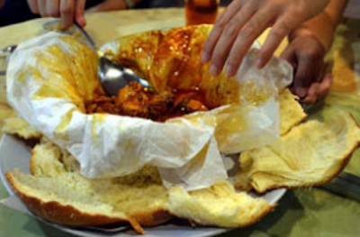

Wai Kee Sei Wu Lai Fan
Tucked next to a basketball court, they serve flavorful homemade laifun, curry or clear-style, for ~RM13—affordable & delicious.
Read MoreYau Kee Restaurant
A longtime favorite for their curry chicken bun—“Same as 20 yrs back. Food still taste the same.”
Read MoreKam Ling Restaurant
Captures local dining essence with authentic Chinese dishes and a cozy atmosphere.
Read MoreKampar Food Centre
A hub for Chinese hawker stalls—operating day & night, famous for claypot chicken rice and affordable food court fare.
Read MoreLoong Foong Kook
Affordable & flavorful dishes like braised pork rice, nasi lemak with ayam masak merah and sambal sotong. One of Kampar’s best for these local fares.
Read More